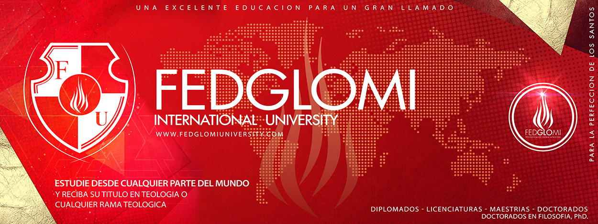

Productos congelados: Nueva hipótesis del origen del covid-19
El covid-19 podría haber llegado a la población humana a través de especies de animales y productos congelados contaminados, así lo afirmó un panel de expertos de la Organización Mundial de la Salud(OMS) que investigó el origen de la pandemia en Wuhan, China.
Pese a que la transmisión a través de un huésped animal intermedio «es la [causa] más probable y la que requerirá más estudio e investigación», Peter Ben Embarek, Jefe de la misión internacional de expertos de la OMS en China y especialista en zoonosis, también consideró posible la transmisión por medio de algún alimento congelado de la cadena de frío, aunque dijo que no sabían mucho sobre ello.
El zoólogo explicó que el equipo había identificado a vendedores del mercado «mojado» de Huanan, al que se vincularon algunos de los primeros casos oficiales de covid-19 y en el que se vendían productos animales congelados, incluido animales salvajes.
«Así que tenemos el potencial de continuar esta pista e investigar la cadena de suministro y los animales que fueron distribuidos al mercado», recalcó.
Por su parte, las autoridades chinas han atribuido los últimos rebrotes vividos en el país a los congelados importados del extranjero y a las personas venidas de otros países, sugiriendo que el virus pudo haberse originado en otra nación.
«Sabemos que el virus puede sobrevivir en condiciones que se encuentran en estos ambientes helados, fríos, pero en realidad no sabemos si el virus se puede transmitir a humanos» o en qué condiciones, precisó el experto de la OMS.
La misión investigativa de la OMS duró aproximadamente dos semanas y fue estrictamente controlada por las autoridades chinas, que se resistieron a esta misión en un principio entre llamados de Estados Unidos a que fueran más trasparente y críticas de Pekín a Washington por «politizar» el asunto.
Tras meses de negociaciones y una vez en el país, desde la OMS aseguraron que los expertos chinos en el terreno se habían mostrado abiertos y colaboradores con la investigación .
Posted On: 2021-02-11T00:00:00
Posted By: Por Redaccion -


Content Date: 2021-02-11
Download Date: 2021-05-13
Document ID: L0C04C76L